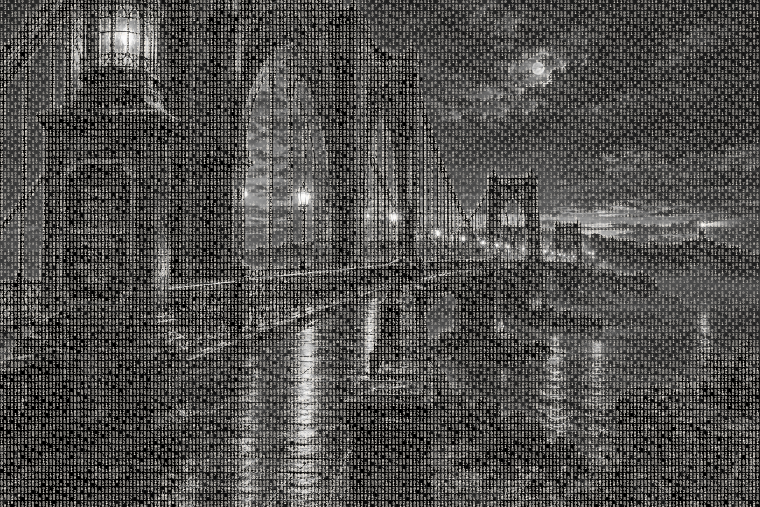

bridge forward 01
light substrate
dark substrate
Bridge Lock remains untouched as the checkpoint. These three auditions only push the bridge towers, cables, roadway and reflected lights forward while keeping the numerical field present. Book remains untouched.